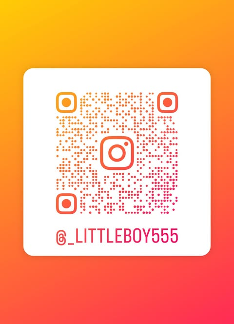

ช่องทางติดต่อผู้ดูแล

สแกนเพื่อเริ่มแชท — Instagram
สแกนด้วยกล้องมือถือเพื่อแอด/แชท
หากสแกนไม่ติด ให้พิมพ์ชื่อ IG : _littleboy555
Facebook : Kungbang Konkaew
Line Id : kungbang2435
มาแอบคุยกันเด้อ แอดเหงา
- ผู้ดูแล: ทีมเทคนิค KNW Check
- เวลาทำการ: จันทร์–ศุกร์ 08:30–21:30
- หมายเหตุ: หากต้องการให้ทีมช่วยแก้ไขข้อมูล กรุณาแนบหลักฐานและติดต่อผ่านช่องทางด้านบน